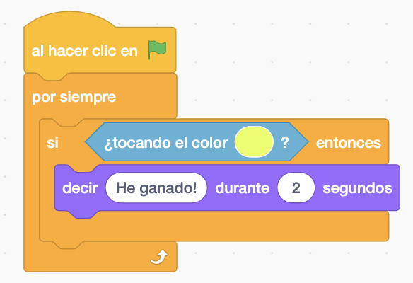

2 Coches los moveremos con distintas teclas para que puedan juegar dos personas.
Seleccionaremos el escenario del circuito del coche.

Pondremos el escenario del circuito con los coches en paralelo cada uno en un carril del circuito. Mirando hacia la derecha.


Uno de los coches hara una rotación con las flecha derecha e izquierda y la flecha hacia arriba se movera hacia delante. Y el otro se movera con A-D (rotacion derecha e izquierda) y W hacia delante.

Si cualquier coche toca el color verde (Cuidado que hay distintos tonos de verde en el circuito) volveran a su punto de partida. Usando el bloque de "deslizar".

Si un coche toca a otro los dos se deslizaran a su punto de partida y harán unos giros. Habrá que hacer un enviar para que el otro coche pueda hacer el deslizar.


Dibujaremos una meta o pondremos un objeto (como se prefiera) en el circuito para que cuando lo toque diga el coche que ha ganado.


Y por último en cualquier juego se podria hacer un escenario de "GAME OVER".
Y el juego quedaría así.

Para descargarte el juego terminado pulsa aquí.